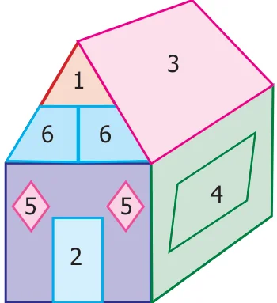

We have studied area of four sided shapes such as square and rectangle. Do you think that all the four sided shapes will happen to be square or rectangle? Think! Let us learn about some more four sided shapes that we see around us through the conversation that follows.
Observe the shapes found in the figure
Teacher : Can you tell me the name of the shapes that you see in the figure? Student : Yes teacher, there is a triangle, square and rectangle

Teacher : What is the shape, numbered 4 in the figure?
Student : The shape looks like a rectangle because the opposite sides are equal and parallel but the adjacent sides do not make right angle. Can we call such shapes as rectangles?
Teacher : Even though the opposite sides are equal and parallel, the adjacent sides do not make right angles instead they make acute and obtuse angles. This
shape has a special name called parallelogram.
Fig.2.1
Student : Teacher, can you tell me about shape, numbered 5?
Teacher : Try to tell the properties that you know, then I will help you. Student : Shape 5 has all the sides equal and looks like a square but the adjacent sides do not make right angles. Is there any special name for such shapes.
Teacher : Yes, it has a special name called rhombus. What about the shape, numbered 6? Student : Shape 6 does not have any of the properties of square and rectangle. But one pair of opposite sides are parallel. Does this also have a different name?
Teacher : Yes, it is called trapezium. Now, let us learn about all the three new shapes namely parallelogram, rhombus and trapezium.